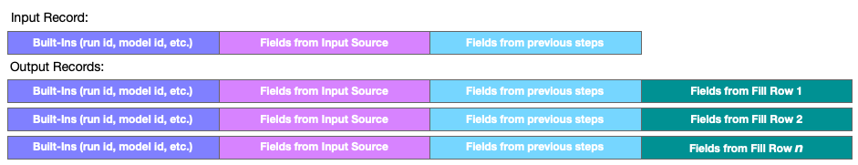

Fill Step
This step combines the current record with data generated by a user-configurable sequence of numeric or date generators. The numbers and/or dates generated can reference values in the input as part of their configuration. For each input record, the step combines that data with each row of generated data. This is similar in operation to the Combine step, but instead of records from a data-source, the combine data is generated. This step almost always emits multiple records to the next step for each record the step receives.
Configuration
To configure a Fill step, you must add at least one generated field. Click the Add Generator button to begin. Next, select the type of generated field you want to add, either Number or Date. Then complete the configuration of the sequence:
- Operation: - Increment to create an increasing sequence; Decrement to create a decreasing one.
- Unit: - Depends upon the generator type. For example: years, months, or days for a Date generator.
- Amount: - The amount of change in each item of the sequence. Can be set from data values in the current record.
- Start Value: - The first value in the sequence. Can be set from data values in the current record.
- Limit Type: - Count to produce a sequence of a specific length; End Value to produce a sequence that ends at a specific value.
- Limit: - A count or end-value, depending upon the Limit Type. Can be set from data values in the current record.
- Output Label: - The label associated with the generated data field. This is how the field will be identified in following steps.
Click the + icon to add the configured generator to the sequence. You may now add more generated fields. Note that additional fields after the first will not have a limit attribute, the number of generated rows is fixed by the first defined generator.
See also: About Stage Steps